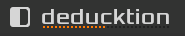

The Top Bar¶
The top bar provides access to the system menu, preset browser, voice display and master volume control.
Deducktion Logo¶
The Deducktion logo occupies the left-side of the top bar.
Right-click the logo to show the resize menu. This allows the plugin window to be resized between normal, medium and large sizes. These correspond to 100%, 150% and 200% of the normal window size.
The voice display is located directly below the Deducktion logo and shows the current voice activity. A highlighted segment indicates that a voice is playing:
System Panel¶
The central part of the top bar is occupied by the system panel. This hosts the following functions, from left to right:
System Menu
Bank Menu
Preset Menu
Preset Navigation Buttons
Preset Number
Preset Name
Master Volume
These are described in detail in the remainder of this section.
Presets¶
Deducktion organises its sounds into presets which in turn are organised into banks. Deducktion’s preset banks contain 100 presets in numbered slots from 001 to 100.
The currently selected slot is shown in the system panel as a number and the name of the preset it contains. To change the selected preset either click the left/right arrows to step through the bank or open the preset menu and select the required preset directly.
Whenever a new preset is selected its current settings are saved and can be restored at any time until a new preset is selected. To revert to this saved version and undo any recent changes select Restore Preset from the menu.
To change the name of the current preset ctrl-click on its name to enter edit mode and edit the text as required. Press enter or click elsewhere to save the changes.
At any time the current preset can be copied to the plugin clipboard. This allows the values to be pasted into a different preset slot either in the same bank or another bank after it has been loaded.
Banks can be saved and restored to allow libraries of presets to be maintained. When first loaded all presets in the bank will be set to defaults unless a bank named ‘Default.ddb’ is found in the Presets folder of the Deducktion home directory. In this case the contents of the bank will be used to provide the intial presets loaded with the plugin.
Use the Bank menu to load saved banks. These must be located in the Presets folder of the Deducktion home directory. Once loaded the bank will be stored internally within the plugin.
Settings¶
The settings menu provides access to the following options:
Ask When Selecting Banks - prompt when changing banks so that unsaved changes are not lost accidentally.
Enable Mouse Wheel Support - enable mouse-wheel control of knobs if it is not provided by your host.
Ignore Velocity for Amps - don’t apply velocity settings to volume calculations. This doesn’t affect using velocity as a modulation source.
Open Home Folder - open the Deducktion home folder.
Master Volume¶
The Master Volume parameter display controls the main output level. This is the final stage of the audio signal path and the output is passed to the host for further processing.
Note: Deducktion includes a +3dB hard clipper at the output stage to prevent excessive audio levels from reaching the host.